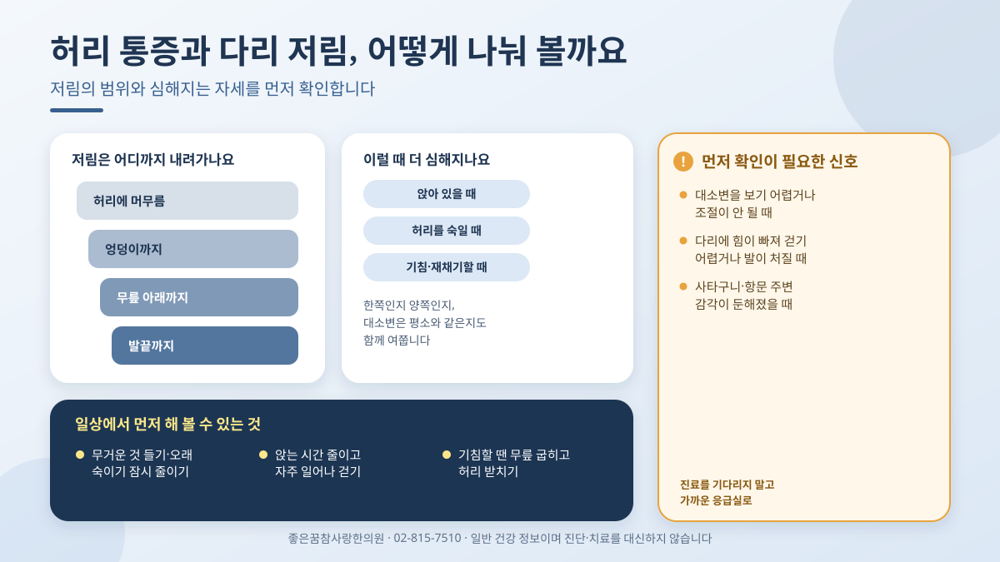

이종호 한의사 감수좋은꿈참사랑한의원 대표원장 (한의사 면허번호 19769)발행 2026-11-22 · 수정 2026-11-26
이 글의 차례
허리 통증과 함께 한쪽 다리로, 특히 무릎 아래까지 띠처럼 뻗치는 저림이 있고 앉거나 기침할 때 심해진다면 디스크 쪽 신경 자극을 생각해 볼 수 있습니다. 다만 엉덩이 근육의 긴장으로도 비슷한 당김이 올 수 있어, 저림이 어디까지 내려가는지와 어떤 동작에서 심해지는지를 나눠 봅니다.
그보다 먼저 확인할 것이 있습니다. 소변이나 대변을 보기 어렵거나 참기 힘든 경우, 사타구니와 항문 주변처럼 자전거 안장에 닿는 부위의 감각이 둔해진 경우, 다리에 힘이 빠져 발이 끌리는 경우는 한의원 진료로 대신할 수 없는 신호입니다. 하나라도 있으면 기다리지 말고 가까운 응급실이나 척추 진료가 가능한 병원에서 바로 확인을 받으세요.
왜 이런 불편이 생길 수 있나요
- 척추뼈 사이의 디스크가 밀려나 주변 신경을 자극하면 허리보다 엉덩이와 다리 쪽으로 뻗치는 저림이 먼저 느껴질 수 있습니다.
- 앉아 있거나 허리를 숙이면 디스크에 실리는 압력이 커져, 이런 자세나 기침·재채기를 할 때 통증이 심해지는 경우가 많습니다.
- 엉덩이 근육의 긴장이나 골반 주변 문제로도 다리가 당기는 느낌이 올 수 있습니다.
- 나이가 들며 신경이 지나는 통로가 좁아지면, 걸을 때 다리가 저리다가 앉아 쉬면 풀리는 양상이 나타나기도 합니다.
저림의 모양으로 나눠 봅니다
- 디스크 쪽 신경 자극을 생각해 볼 때: 한쪽 무릎 아래 종아리와 발까지 띠처럼 내려가는 저림이 있고, 발등이나 발바닥 한 부위가 둔하며, 앉기·숙이기·기침에서 심해집니다.
- 근육 긴장 쪽을 생각해 볼 때: 엉덩이와 허벅지 뒤가 넓게 뻐근하고 누르면 아픈 자리가 있으며, 자세를 바꾸거나 근육을 풀면 달라집니다.
- 걸으면 저리다가 앉거나 허리를 숙이고 쉬면 풀릴 때: 신경 통로가 좁아진 경우를 생각해 볼 수 있고, 서서 쉬기만 해도 풀리면서 발이 차다면 혈관 쪽 확인도 필요합니다.
- 양쪽 다리가 함께 저리거나 힘이 빠질 때: 모양을 나누기보다 바로 병원 확인이 먼저입니다.
먼저 이렇게 여쭙니다
- 대소변 보는 것이 평소와 다르거나, 사타구니·항문 주변 감각이 둔한가요?
- 다리에 힘이 빠지거나 발끝·뒤꿈치로 서서 걷기 어려운가요?
- 통증이 허리에 머무르나요, 엉덩이와 다리로 뻗나요?
- 저림이 엉덩이까지인가요, 무릎 아래 발끝까지 내려가나요?
- 저림은 한쪽인가요, 양쪽인가요?
- 앉을 때, 기침할 때, 숙일 때 더 심해지나요?
일상에서 먼저 해 볼 수 있는 것
위험 신호가 없을 때 해 볼 수 있는 것들입니다.
- 무거운 것 들기, 오래 숙이기처럼 통증이 심해지는 동작을 잠시 줄이기
- 오래 누워 있기보다 아프지 않은 범위에서 집 안을 천천히 걷기
- 30~40분 앉아 있었다면 일어나 자세를 바꾸고, 앉을 때는 허리 뒤에 작은 쿠션 대기
- 기침이나 재채기를 할 때는 무릎을 살짝 굽히고 허리를 받쳐 충격 줄이기
- 바로 누워 무릎 아래 베개를 받치거나, 옆으로 누워 무릎 사이에 베개 끼우기
- 저림이 내려가는 범위와 심해지는 동작을 하루 한 번 같은 시간에 적어 두기
상황별 예시
- 예를 들어 하루 종일 앉아 일하는 직장인이 마감이 몰린 주를 보낸 뒤 엉덩이에서 종아리까지 저리기 시작한 경우, 30~40분마다 일어나 걷고 저림의 범위를 매일 적어 봅니다. 범위가 엉덩이 쪽으로 올라오는지 발끝으로 내려가는지가 상담에서 중요한 단서가 됩니다.
- 예를 들어 이사나 김장처럼 무거운 것을 든 다음 날 허리가 굳고 한쪽 다리가 당기는 경우, 며칠은 무리한 동작을 줄이되 오래 누워만 있지는 않습니다.
- 예를 들어 어르신이 장을 보러 걷다 다리가 저려 자주 멈춰 앉게 되는 경우, 디스크와는 다른 양상일 수 있어 몇 분 걷고 쉬는지 적어 두었다가 진료 때 알려 주세요.
스스로 점검해 보세요
- 저림이 무릎 아래, 발등이나 발바닥까지 내려간다
- 앉아 있거나 허리를 숙이면 저림이 심해진다
- 기침이나 재채기를 하면 허리나 다리가 찌릿하다
- 걷다 보면 다리가 저려 쉬어야 한다
- 발끝이나 뒤꿈치로 서서 걷기가 어렵거나 발이 끌린다
- 양쪽 다리가 함께 저리다
- 대소변을 보기 어렵거나 참기 힘들다
- 사타구니·항문 주변 감각이 둔하다
발끝·뒤꿈치 걷기가 어렵거나, 양쪽 다리가 저리거나, 대소변·감각 이상이 있다면 지켜보지 말고 바로 가까운 응급실이나 척추 진료가 가능한 병원에서 확인을 받으세요.

한의원에서 함께 살필 수 있는 경우
- 위험 신호 없이 허리가 아프고 다리로 저림이 퍼지는 경우 허리 자세와 엉덩이·골반 주변의 긴장을 함께 살핍니다.
- 앉거나 기침할 때 허리가 찌르듯 아픈 경우 생활 속 움직임을 함께 살핍니다.
- 병원 검사에서 수술이 급하지 않다는 설명을 들은 뒤 남은 불편이 있는 경우 검사 결과를 참고해 함께 살핍니다.
좋은꿈참사랑한의원에서는 첫 방문 때 언제, 어떤 자세에서 아프고 저림이 어디까지 내려가는지 듣고, 대소변과 감각, 다리 힘 같은 위험 신호부터 확인합니다. 이어서 모든 분께 맥을 짚고, 서기·걷기·허리 숙이기와 누워서 다리 들기, 발끝·뒤꿈치로 서기 같은 움직임과 감각·근력을 살핍니다.
엉덩이나 허리 주변 근육 상태를 볼 필요가 있다고 판단되면 초음파를 함께 씁니다. 신경 증상이 뚜렷하거나 영상 검사가 필요하다고 보이면 병원 진료를 먼저 안내하고, 그렇지 않다면 침·약침·추나·온열 가운데 상태에 맞는 방법을 정해 그 이유를 설명해 드립니다. 귀가 전에는 피해야 할 동작과 앉는 법, 다음에 다시 확인할 동작을 알려 드립니다.
얼마나 지켜보고 언제 상담할까요
- 위험 신호가 없다면 무리한 동작을 줄이고 가능한 범위에서 움직이며 며칠에서 1~2주 경과를 지켜볼 수 있습니다.
- 2~4주가 지나도 저림이 그대로라면 진료를 받아 확인해 보세요. 그 전이라도 저림이 점점 아래로 내려가면 기다리지 말고 진료를 받습니다.
- 통증이 심해 잠을 못 이루거나 걷기가 힘들다면 기다리지 말고 처음부터 진료를 받습니다.
- 다리 힘이 약해지거나 감각이 둔한 범위가 넓어지면 그날 바로 병원 확인을 받습니다.
이렇게 기록해 오시면 상담이 쉬워집니다
- 통증이 시작된 날과 계기(물건 들기, 오래 앉기 등)
- 저림이 내려가는 범위(엉덩이·허벅지·종아리·발)와 한쪽인지 양쪽인지
- 통증이 심해지는 동작과 편한 자세
- 걷다가 쉬어야 한다면 몇 분쯤 걷고 쉬는지
- 병원 영상 검사 판독지와 복용 중인 진통제
이런 증상은 먼저 확인이 필요합니다
- 대소변을 보기 어렵거나 참기 힘든 경우, 소변이 새는 경우
- 사타구니·항문 주변 감각이 둔해진 경우
- 다리에 힘이 빠져 걷기 어렵거나 발이 처져 끌리는 경우
- 양쪽 다리가 함께 저리거나 힘이 빠지는 경우
- 열이 나면서 허리 통증이 심해지는 경우
- 넘어진 뒤 생긴 통증, 밤에 누워 있어도 계속 심해지는 통증, 이유 없이 체중이 줄어드는 경우
위 신호는 한의원 진료로 대신하지 않습니다. 특히 대소변 이상, 안장 부위 감각 저하, 다리 힘 빠짐은 기다리지 말고 가까운 응급실에서 바로 확인을 받으세요. 복용 중인 약은 처방한 의사와 상의 없이 줄이거나 끊지 않습니다.
관련 글
- 허리가 아파서 왔는데 대변과 소변은 왜 묻나요?
- 병원에서 찍은 MRI나 X-ray 자료를 한의원에 가져가면 어떻게 쓰이나요?
- 장거리 운전 뒤 허리와 다리가 뻐근할 때는 어떻게 하나요?

여쭙는 것
- 대소변 보는 것이 평소와 다르거나, 사타구니·항문 주변 감각이 둔한가요?
- 다리에 힘이 빠지거나 발끝·뒤꿈치로 서서 걷기 어려운가요?
- 통증이 허리에 머무르나요, 엉덩이와 다리로 뻗나요?
생활에서 해 볼 것
- 무거운 것 들기, 오래 숙이기처럼 통증이 심해지는 동작을 잠시 줄이기
- 오래 누워 있기보다 아프지 않은 범위에서 집 안을 천천히 걷기
- 30~40분 앉아 있었다면 일어나 자세를 바꾸고, 앉을 때는 허리 뒤에 작은 쿠션 대기
한의원에서 함께 살필 것
- 위험 신호 없이 허리가 아프고 다리로 저림이 퍼지는 경우 허리 자세와 엉덩이·골반…
- 앉거나 기침할 때 허리가 찌르듯 아픈 경우 생활 속 움직임을 함께 살핍니다.
- 병원 검사에서 수술이 급하지 않다는 설명을 들은 뒤 남은 불편이 있는 경우 검사 결…
먼저 확인이 필요한 신호
- 대소변을 보기 어렵거나 참기 힘든 경우, 소변이 새는 경우
- 사타구니·항문 주변 감각이 둔해진 경우
- 다리에 힘이 빠져 걷기 어렵거나 발이 처져 끌리는 경우
한눈에 보는 표
| 구분 | 핵심 |
|---|---|
| 여쭙는 것 | 대소변 보는 것이 평소와 다르거나, 사타구니·항문 주변 감각이 둔한가요? 다리에 힘이 빠지거나 발끝·뒤꿈치로 서서 걷기 어려운가요? |
| 생활에서 해 볼 것 | 무거운 것 들기, 오래 숙이기처럼 통증이 심해지는 동작을 잠시 줄이기 오래 누워 있기보다 아프지 않은 범위에서 집 안을 천천히 걷기 |
| 한의원에서 함께 살필 것 | 위험 신호 없이 허리가 아프고 다리로 저림이 퍼지는 경우 허리 자세와 엉덩이·골반 주변의 긴장을 함께 살핍니다. 앉거나 기침할 때 허리가 찌르듯 아픈 경우 생활 속 움직임을 함께 살핍니다. |
| 먼저 확인이 필요한 신호 | 대소변을 보기 어렵거나 참기 힘든 경우, 소변이 새는 경우 사타구니·항문 주변 감각이 둔해진 경우 |
자주 묻는 질문
다리 저림이 있으면 모두 디스크인가요?
엉덩이 근육의 긴장, 신경 통로가 좁아진 경우, 혈관 문제 등 이유가 여러 가지라 증상과 진찰, 필요하면 영상 검사를 함께 보고 판단합니다.
누워서 쉬면 좋은가요?
아주 아픈 첫 하루 이틀은 짧게 쉬는 것이 도움이 되지만, 오래 누워 있으면 오히려 뻣뻣해질 수 있어 아프지 않은 범위에서 조금씩 움직이는 편을 권합니다.
MRI를 꼭 찍어야 하나요?
위험 신호가 없다면 증상과 진찰로 먼저 경과를 보는 경우가 많습니다. 다리 힘이 빠지면 기다리지 말고 바로 병원 진료를 받으시고, 몇 주가 지나도 저림이 그대로라면 병원에서 영상 검사를 상의해 보세요.
디스크라고 진단받았는데 한의원 진료를 같이 받아도 되나요?
받고 있는 치료와 영상 소견을 알려 주시면 겹치지 않게 함께 살핍니다. 신경 증상이 심해지면 병원 진료를 먼저 권합니다.
좋은꿈참사랑한의원은 재진 때 지난번 이야기부터 이어서 여쭙니다. 진료시간과 예약은 오시는 길에서 확인하세요.
어디서 상담받을 수 있나요?
좋은꿈참사랑한의원은 서울 동작구 만양로2길 2 신성빌딩 3층·5층(서울 동작구 상도동, 7호선 상도역 3번 출구 근처)에 있습니다. 한의사 3명(이종호 대표원장, 조영기 수석진료원장, 정원영 진료원장)이 진료합니다. 진료시간은 평일 09:30~20:00(점심 13:00~14:00), 토·일·공휴일 09:30~15:00이며, 방문 전 전화로 확인을 권합니다. 예약은 네이버 예약, 카카오톡 상담, 전화 02-815-7510로 받습니다.
이 글은 일반적인 건강 정보이며 개인의 진단이나 치료를 대신하지 않습니다. 증상이 있거나 복용 중인 약이 있다면 진료를 통해 확인하세요. 치료 효과는 개인마다 다를 수 있습니다.
작성 기준: 일반적으로 알려져 있는 건강 정보를 참고해 정리했습니다(대표원장 감수). 증상 기록은 1~2주 동안 하루 1회, 비슷한 시간에 적어 오시면 지난 상태와 비교하기 쉽습니다.